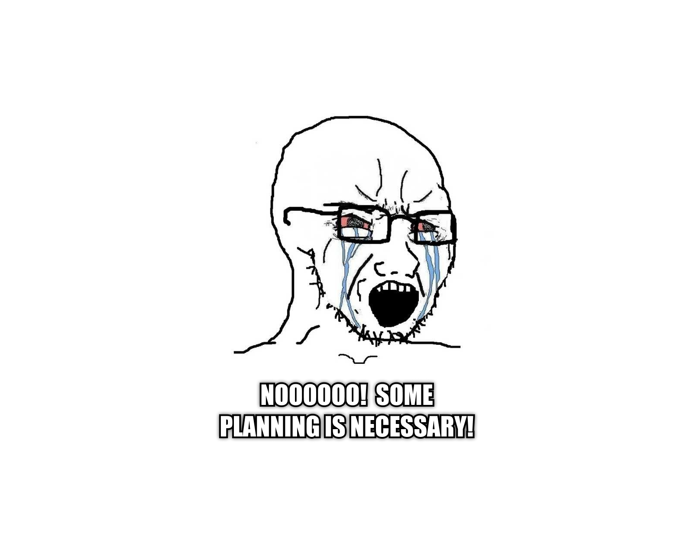

You don’t need a better plan.
You need a worse one—with action.
Let’s stop pretending.
You’re not stuck because your productivity system needs optimizing.
You’re stuck because you’re scared.
Scared of failure.
Scared of looking stupid.
Scared of wasting time.
This fear is likely unconscious (it was for me).
So what do you do?
You hide behind planning.
You tell yourself you’re “getting organized.”
You color-code another Notion board.
You create a second brain inside Roam.
You optimize your Obsidian vault like it’s the lost library of Alexandria.
But we both know the truth.
You’re not lazy.
You’re not disorganized.
You’re an overplanning midwit—like I was.
Smart enough to overthink.
Dumb enough to think the thinking is the work.
Caught in the illusion that another tool or process will finally unlock your potential.
How to spot when you’re in the planning trap:
You’re researching tools instead of using them.
60 minutes deep in YouTube reviews of the “perfect” note-taking app? That’s the trap.
You’re creating complex systems you’ll never maintain.
If your workflow requires 7 steps before actual work happens, you’re hiding.
You feel busy but produce nothing.
End the day exhausted with zero tangible output? Classic planning addiction.
You get more dopamine from organizing than doing.
That satisfaction from color-coding isn’t progress. It’s procrastination in disguise.
You’re waiting for “perfect conditions.”
“I’ll start when my system is complete” is fear wearing a productivity mask.
The endless productivity porn consumption loop.
Another productivity book. Another course. Another guru. But no output.
The planning trap feels like progress while keeping you perfectly safe from the risk of actual creation (i.e. the risk of failing).
And that’s exactly the point.
”Some planning IS necessary!”
Yes. Obviously.
Planning isn’t the enemy. Over-planning is.
The difference?
Necessary planning: 20 minutes mapping your next move, then 3 hours executing.
Over-planning: 3 days perfecting your system, 30 minutes half-heartedly executing.
Planning should be a launchpad, not a hiding place.
If your planning outweighs your doing... You’re postponing.
The 10X Rule: What Actually Works
The 10X Rule: For every minute planning, spend 10X doing.
Break this ratio? You're trapped in midwit purgatory.
Planning feels productive but offers minimal value compared to creation. It's seductive, giving a sense of progress without risking failure.
What works instead?
Doing. Imperfectly. Repeatedly.
I've spent years as a productive procrastinator—chasing systems, structure, clarity. But the truth? Perfect plans crumble in real life. Reality doesn't care about your organized lists.
Reality rewards one thing: movement.
You don't need clarity to move. You get clarity by moving.
Here’s the big idea:
Success isn’t from a flawless productivity system. It comes from courageous imperfection. Action isn’t the end but an ongoing process toward success.
You’ll look stupid. You’ll cringe later. That’s the point. Everyone who did something great has work they’d delete if they could. Cringe is growth. It means you moved. Most people never move. They’re stuck in idea purgatory, planning and optimizing to death.
So here’s what to do:
Take a breath. Listen to inspiration. Write one thing down. Do it. That’s it.
For a constant reminder of how simple it is to change reality through inspired action, download monkwit. It’s the app I made to stop being an overplanning midwit.
The app has a dedicated "focus mode" which helps you focus. I leave focus mode open on my desk as a middle finger to my inner midwit.
Let monkwit remind you that motion beats planning. A shrine to the gospel of getting shit done.
So burn the system. Let’s start doing.